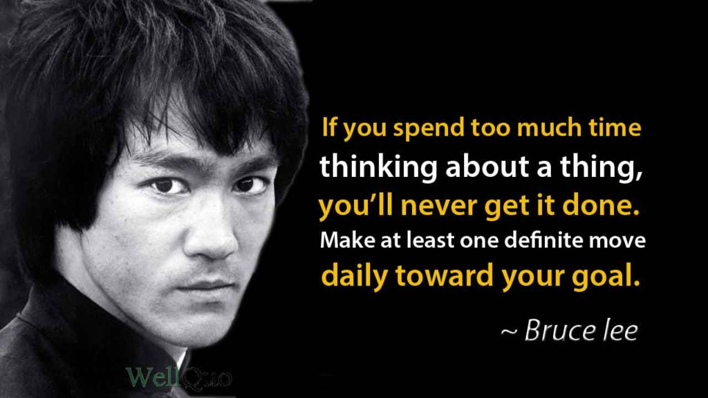
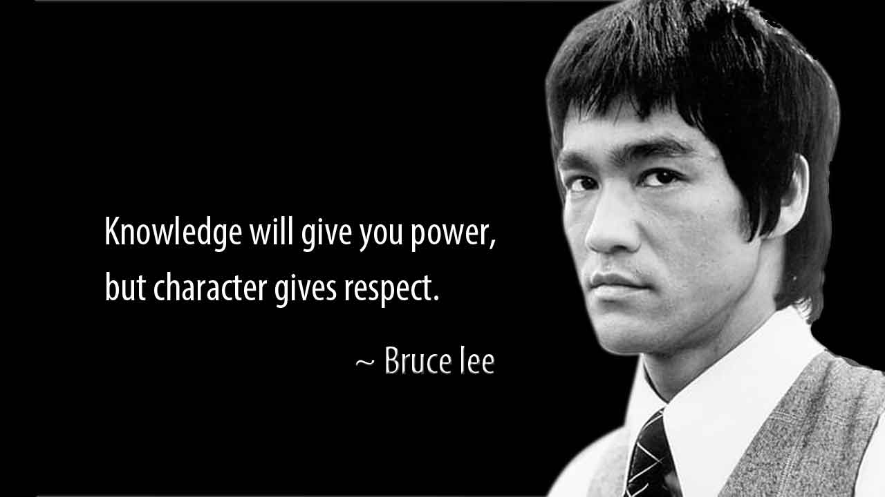

Bruce Lee - The greatest Martial artist of all time!
It is widely accepted by fighters and other people around the world that Bruce Lee was the most influential martial artist of all time. From his famous action movies to his unique martial art of Jeet Kune Do, the legend of Bruce Lee has held strong.
And while many may think Bruce Lee was little more than a Hollywood actor, his greatest achievements extended far beyond the big screen. He was also a wise philosopher saying many things regarding the sport of martial arts that people still recognize today.
Although he is seen as the most influential martial artist in history, one question remains that some try to argue regarding his abilities and skills in a real fighting situation:
Is Bruce Lee the greatest martial artist of all time?
You’ll quickly find more than just one or two people who think so.
Pro Boxer Manny Pacquiao says Bruce Lee is his idol, saying he tries to copy his hair and other looks. But more than that, Pacquiao also said he changed many of his fighting techniques into Lee’s style because he felt it would help him become a champion. Which he did — 12 times.
The actor and mixed martial artist Chuck Norris famously fought Bruce Lee on the big screen in their movie The Way of the Dragon. In the audio commentary on the DVD, Jon Benn who played the movie’s mob boss asked Norris who would win in a real-life fight. Norris responded almost immediately saying, “Bruce of course. Nobody can beat him."
This opinion by Chuck Norris has been shared by hundreds of professional fighters both before and after.
Bruce Lee continues to be seen by the masses as the greatest martial artist of all time. He was referred to by Dana White as a “worldwide fighting icon” not only because of martial arts but because of his philosophies, movies, teaching ability, and more.
It’s easy to agree with boxing Hall of Famer Sugar Ray Leonard who said, “In the dictionary, you say ‘Greatest’, you say ‘Bruce Lee’. That’s the way it is. He is second to no one.”
Among his most famous quotes, Bruce Lee once said -
“Empty your mind, be formless, shapeless — like water. Now you put water into a cup, it becomes the cup. You put water into a bottle, it becomes the bottle. You put it in a teapot, it becomes the teapot. Now water can flow or it can crash. Be water, my friend.”